Mattermost Deck
Mattermost Web の右側に、メンション、チャンネル、DM、検索結果などをペインとして並べます。 Adds panes beside Mattermost Web for mentions, channels, DMs, and search results.
ログイン、投稿、編集、スレッド操作は Mattermost 本体で行います。 Signing in, posting, editing, and threads stay in Mattermost itself.
| Browser | Google Chrome 120 以降Google Chrome 120 or later |
|---|---|
| UI | 9 言語9 languages |
| 保存先Storage | このブラウザー内のみThis browser only |
| ライセンスLicense | MIT |

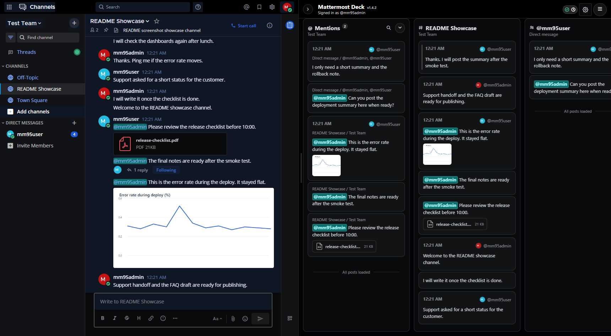
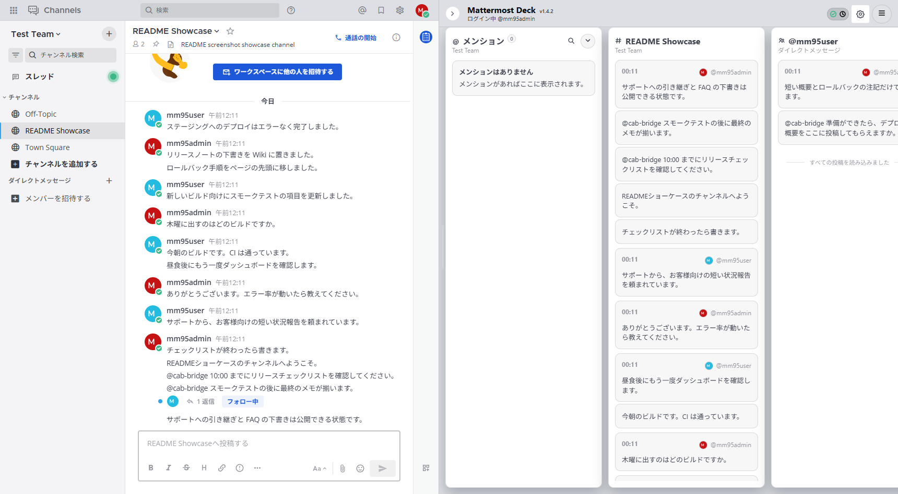

画面の占め方How it uses the width
Mattermost の本文幅は変わらず、右ペイン（スレッドや検索）を開いた分だけ Deck が狭くなります。Deck の幅が 280px を下回ると 52px のレールに折り畳み、右ペインを閉じると元の幅とスクロール位置に戻ります。各ペインの幅は 200〜800px で、右端のドラッグで変えます。The Mattermost main area keeps its width; Deck narrows by the width of the right pane (thread or search). Below 280 px it collapses to a 52 px rail, and returns to its width and scroll position when the pane closes. Panes are 200–800 px wide, resized by dragging the right edge.
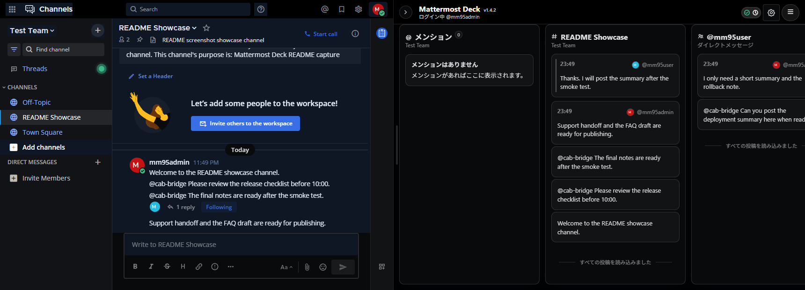
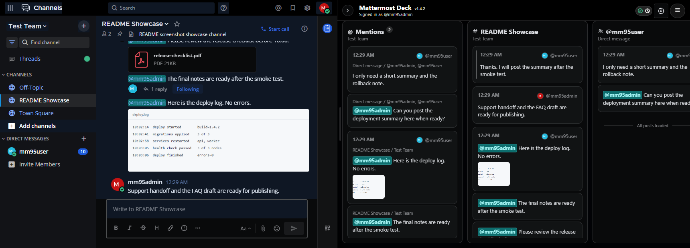
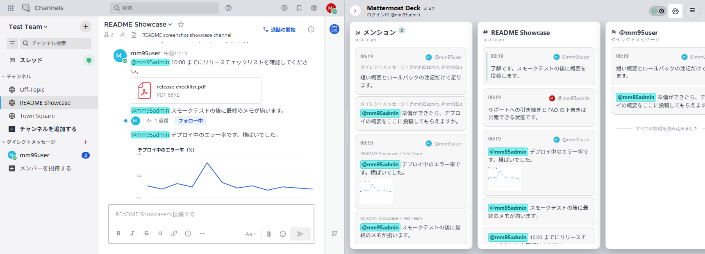

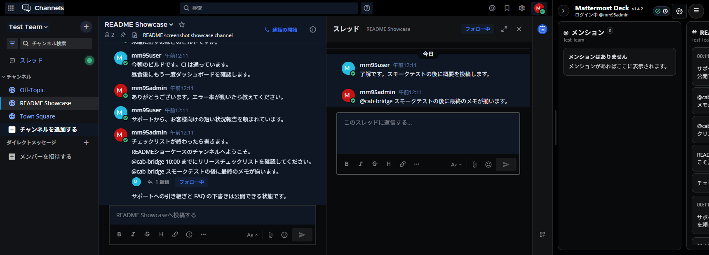

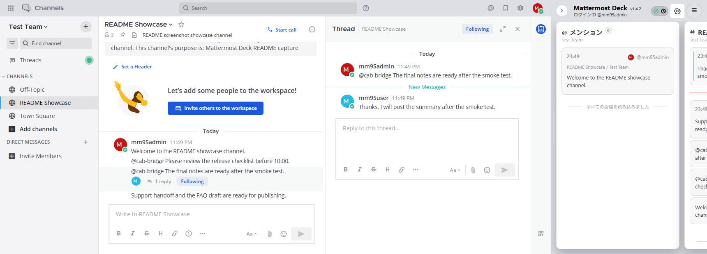


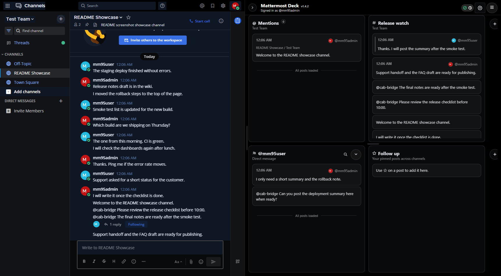
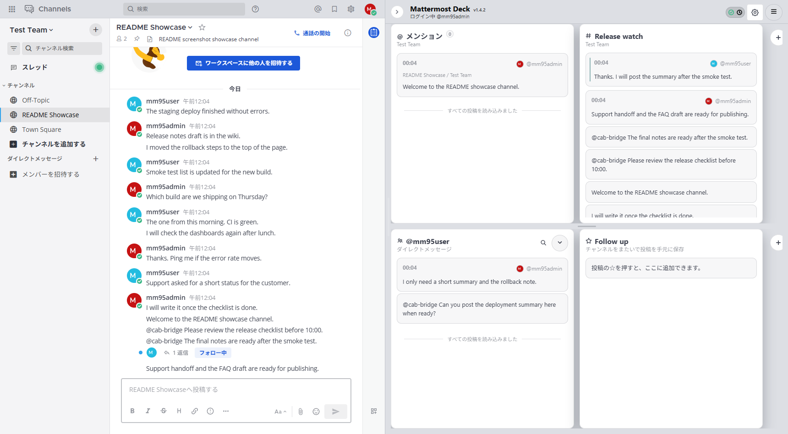
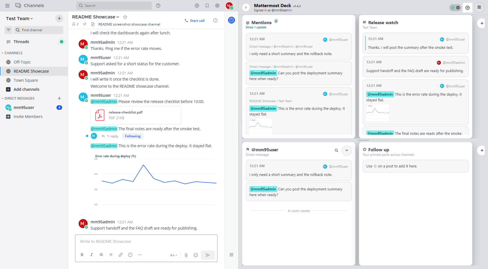
上下 2 段Two rows
| 切替Switch | Views で 1 段／2 段を切り替えます。初回のみ上部の「2 段を試す」から切り替えられます。Switch rows from Views. A one-time “Try two rows” shortcut appears above the panes. |
| スクロールScrolling | 段ごとに独立して横スクロールします。Each row scrolls horizontally on its own. |
| 高さHeight | 境界のドラッグで 20〜80%。ダブルクリックか Home で均等、↑ ↓ で微調整。Drag the divider, 20–80%. Double-click or Home to even out; ↑ ↓ adjust. |
| 並び替えReorder | タイトルのドラッグ（段をまたげます）。Esc で取り消し。Drag a title, across rows too. Esc cancels. |
| 別名Rename | タイトルをダブルクリック／右クリック／F2。空で保存すると元の名前に戻ります。Double-click, right-click, or F2 on the title. Blank restores the name. |
| 保存Saving | Views に保存、JSON で書き出し・読み込み。段の高さ配分も含みます。Save as Views; export and import as JSON, including the height split. |
ペインの種類Pane types＋ から追加。同じ種類を複数並べられますAdd with +. The same type can be used more than once
| メンションMentionsmentions | 参加している全チーム・全チャンネルのメンションを 1 つの一覧に。カスタムメンションキー、@all @channel @here、グループメンション、DM／GM、CRT 有効時のスレッド返信を Mattermost の設定どおりに扱います。自分のユーザー名は強調表示されます。画像の添付はサムネイル（設定で切り替え可）、それ以外のファイルはファイル名とサイズで表示します。Mentions from every joined team and channel in one list: custom keys, @all @channel @here, group mentions, DMs/GMs, and thread replies under CRT, resolved per your Mattermost settings. Your own username is highlighted. Image attachments show as thumbnails (switchable in settings); other files show as a name and size. |
| 要確認Reviewmentions / review | 「確認済みにする」を押すまで消えない一覧。Mattermost 側で既読にしても、投稿を開いても消えません。直後 5 秒は取り消せ、履歴から戻せます。Posts stay until you confirm them; reading or opening them in Mattermost does not remove them. Five-second undo, plus history. |
| チャンネル／DMChannel / DMchannelWatch, dmWatch | 特定のチャンネル、DM、グループメッセージを個別のペインとして開いたままにします。Keeps a channel, DM, or group message open as its own pane. |
| 検索Searchsearch | 検索結果をペインとして固定します。Pins a set of search results as a pane. |
| お気に入りFavoritesfavorites | 投稿の ☆ で登録する個人用リスト。Mattermost の保存済み投稿とは別で、サーバーとアカウントごとに最大 100 件。A personal list added with ☆ on a post, separate from Mattermost saved posts. Up to 100 per server and account. |
| 保存済みSavedsaved | Mattermost の保存済み投稿を一覧にします。Lists your Mattermost saved posts. |
| Diagnosticsdiagnostics | 接続状態、ポーリング、WebSocket の再接続、API の平均遅延とエラー率、描画時間、直近の同期ログ。トレースの JSONL 書き出しは設定画面から行います。Connection status, polling, WebSocket reconnects, API latency and error rate, render time, recent sync log. JSONL trace export is in Settings. |
設定の手順Setup
インストールすると設定画面が開きます。The Settings page opens after installation.
サーバーURLを入力して「保存」を押します。初回は、そのサーバーへのアクセス許可を Chrome が求めるので承認します。リモートのサーバーは HTTPS が必要です（HTTP は localhost などの開発用のみ）。サブパス付きの Site URL も使えます。Enter the Server URL and click Save. The first time, Chrome asks for permission to access that server; approve it. Remote servers need HTTPS (HTTP is for localhost and loopback development only). Site URLs with a subpath also work.
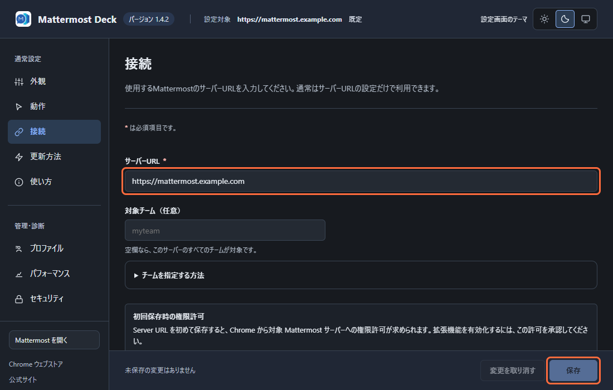
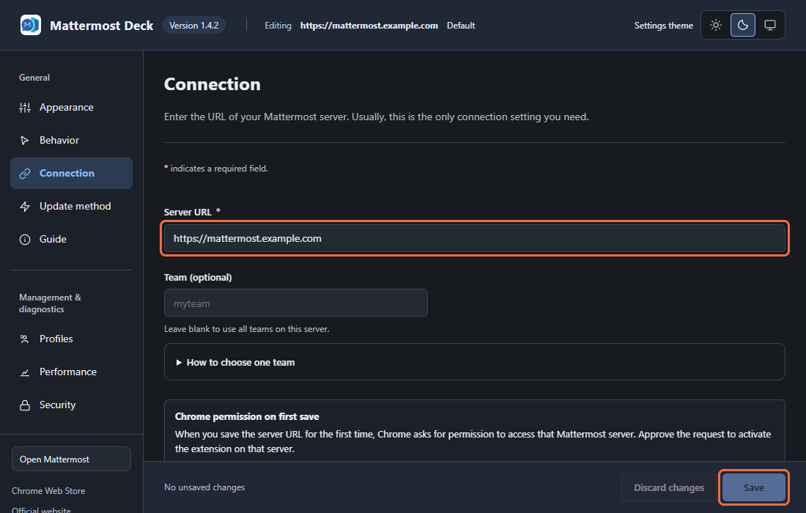


「対象チーム（任意）」を空欄にすると、サーバー上の全チームが対象です。1 つに絞るときは、表示名ではなく URL の名前（team slug）を入れます。例: https://mattermost.example.com/myteam/channels/town-square の myteam。Leave “Team (optional)” blank to use every team on the server. To use one team, enter its URL name (team slug), not its display name. Example: myteam in https://mattermost.example.com/myteam/channels/town-square.
サーバーを開くと右側に Deck が出ます。「＋」からペインを追加します。Open the server and Deck appears on the right. Add panes with “+”.
既定は定期更新です（間隔は 15 秒以上）。リアルタイム更新が必要なときだけ、「リアルタイム更新を設定」に PAT を入力します。PAT は Mattermost の User Settings > Security > Personal Access Tokens で作成します（管理者側で有効化が必要）。保存方法は「セッションのみ」が既定です。リスクは「PAT の扱い」を参照してください。Updates are periodic by default (15 seconds or more). Enter a PAT under “Configure realtime updates” only when you need realtime. Create it in Mattermost under User Settings > Security > Personal Access Tokens (an administrator must enable PATs). Storage defaults to “Session only”. See “Using a PAT” for the risks.

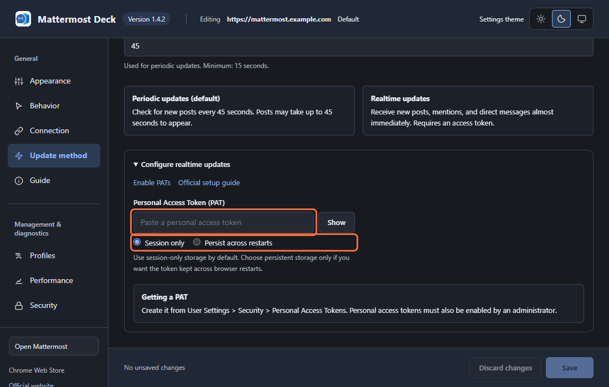
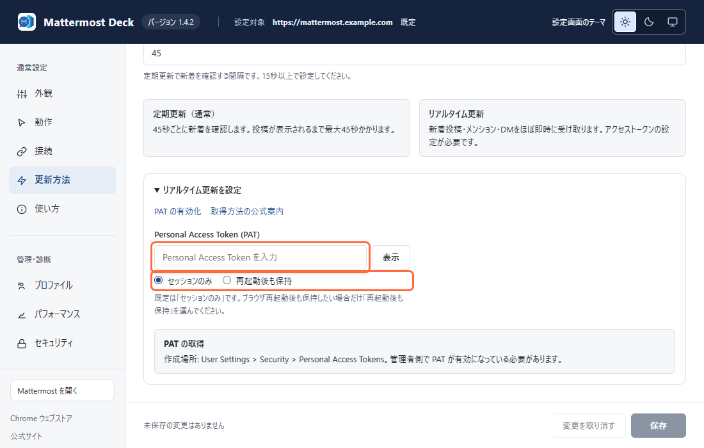
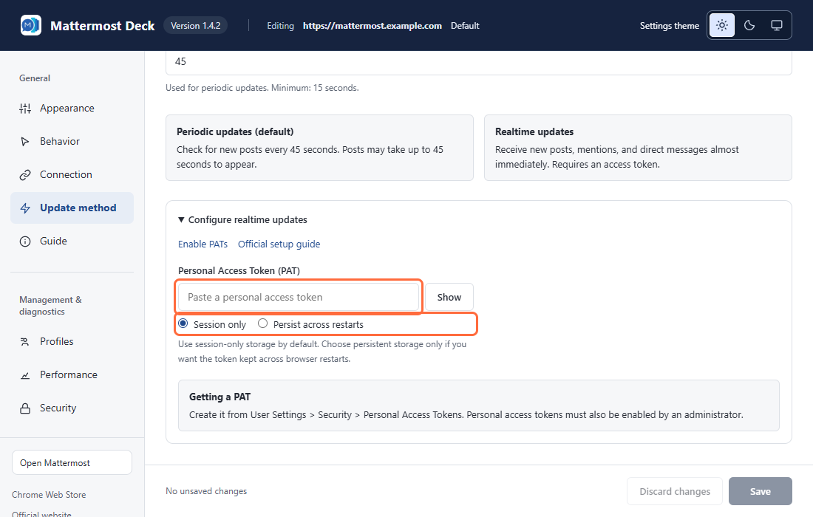
外観: テーマ、言語、文字サイズ、ペイン幅、コンパクト表示、画像プレビューなど。動作: 投稿クリック時の動作、ハイライトするキーワードなど。Appearance: theme, language, font size, pane width, compact mode, image previews. Behavior: post click action, highlight keywords.
用途ごとに設定を分けたいとき、または複数のサーバーに参加していて設定をサーバーごとに分けたいときに使います。接続が動くことを確認してから作成します。Use them to keep separate settings per purpose, or per server when you join more than one. Create them once the connection works.
通信と保存Network and storage
| REST | ブラウザーで開いている Mattermost のセッションを使います。Deck 用の追加ログインはありません。Uses the Mattermost session already open in the browser. No separate sign-in. |
| WebSocket | PAT を設定したときだけ有効です。未設定なら定期取得で更新します。Only when a PAT is set. Otherwise Deck polls. |
| PAT | 既定は chrome.storage.session で、ブラウザーを閉じると消えます。再起動後も保持するかは選べます。Kept in chrome.storage.session by default and cleared when the browser session ends. Persisting across restarts is optional. |
| 送信先Sent to | 設定した Mattermost サーバーのみ。第三者の analytics や広告はありません。Only the Mattermost server you configured. No third-party analytics or ads. |
| 保存先Stored in | 設定、レイアウト、お気に入り、確認状態などは、このブラウザー内にサーバーとアカウントごとに保存します。Settings, layouts, favorites, and review state are kept in this browser, per server and account. |
PAT の扱いUsing a PAT
利点BenefitPAT を設定すると WebSocket で更新を受け取り、リアルタイムに表示します。未設定でも定期更新で使えます。With a PAT, Deck receives updates over WebSocket and shows them in real time. Without one, it polls.
リスクRiskPAT は、発行したアカウントの権限で API を呼べる認証情報です。漏えいすると、そのアカウントの権限で操作される可能性があります。利便性とリスクを比べて判断してください。A PAT calls the API with the permissions of the account that created it. If it leaks, it can be misused with those permissions. Weigh the convenience against that risk.
暗号化Encryption保存時にクライアント側で暗号化しますが、鍵も同じブラウザー内にあります。平文で残さないための最低限の措置で、安全を保証するものではありません。拡張機能のローカル保存領域は Chrome が暗号化しません。A stored PAT is encrypted on the client, but the key is in the same browser. That only avoids plain text and guarantees nothing. Chrome does not encrypt extension local storage.
運用Practice保存方法は既定の「セッションのみ」を推奨します。専用の低権限トークンを使い、不要になったら Mattermost で削除します。Keep the default “Session only” storage. Use a dedicated low-privilege token and delete it in Mattermost when done.
操作のヒントTips
- タイトルのドラッグ中に Esc で並び替えを取り消します。投稿も検索条件もスクロール位置もそのままです。Esc while dragging a title cancels the move. Posts, filters, and scroll positions stay put.
- ペイン右端のダブルクリック、または Home で既定幅に戻します。← → でも調整できます。Double-click a pane's right edge or press Home for the default width. ← → adjust it.
- 虫眼鏡で、読み込み済みの本文と投稿者を絞り込めます。追加の通信はありません。The magnifier filters loaded posts by text or author. No extra requests.
- 使い分けは Views に保存。端末を移すときは JSON で書き出します。Save each setup as a View. Export to JSON to move machines.
- コンパクト表示では
時刻 投稿者: 本文の 1 行になります。Compact mode shows one line:time author: message. - 投稿の「…」から、その投稿者や会話を非表示にできます。取得や既読には影響しません。“…” on a post hides its author or conversation. Fetching and read state are unaffected.
FAQ
Mattermost の代わりに使うものですかDoes it replace Mattermost?
いいえ。ログイン、投稿、編集、スレッド操作は Mattermost 本体のままです。No. Signing in, posting, editing, and threads stay in Mattermost.
PAT は必要ですかDo I need a PAT?
必要ありません。未設定なら定期取得で更新します。設定するとリアルタイム更新になりますが、トークンの管理が必要になります。「PAT の扱い」を参照してください。No. Without one, Deck polls. A PAT enables realtime updates but means managing a token. See “Using a PAT”.
Deck で読むと Mattermost 側も既読になりますかDoes reading in Deck mark posts read?
なりません。「確認済みにする」も Mattermost の既読とは別の状態です。No. “Confirm” is also separate from Mattermost read state.
データは開発者のサーバーへ送られますかIs data sent to the developer?
送られません。通信するのは設定済みの Mattermost サーバーだけです。No. Deck talks only to the Mattermost server you configured.
不具合の報告はどこへWhere do I report a problem?
GitHub Issues で受け付けています。GitHub Issues.